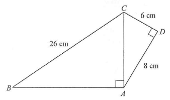

Triangle ABCTriangle ACDRight angleSide lengthsComputed AC
Question
[2012MC#15]
In the figure, the area of quadrilateral $ABCD$ is
A. $144\ \text{cm}^2$
B. $160\ \text{cm}^2$
C. $178\ \text{cm}^2$
D. $288\ \text{cm}^2$

Figure (original exam diagram)
Step-by-step Solution
STEP 1 · Split the quadrilateral
Join $A$ to $C$. The quadrilateral $ABCD$ splits into two triangles:
$\triangle ACD$ (right-angled at $D$) and $\triangle ABC$ (right-angled at $A$).
$$\text{Area of }ABCD=\text{Area of }\triangle ACD+\text{Area of }\triangle ABC$$
STEP 2 · Area of the right triangle ACD
In $\triangle ACD$, the right angle is at $D$, so the two legs are
$CD=6$ cm and $AD=8$ cm.
$$\text{Area of }\triangle ACD=\frac{CD\times AD}{2}=\frac{6\times 8}{2}=24\ \text{cm}^2$$
Note: the perpendicular sides are used, not the hypotenuse $AC$.
Pythagoras' Theorem\(a^{2}+b^{2}=c^{2}\)Triangle \(ACD\) is right-angled at \(D\), so \(AC^{2}=6^{2}+8^{2}\) and \(AC=10\).
STEP 3 · Find the hypotenuse AC
By the Pythagorean theorem in $\triangle ACD$:
$$AC^{2}=CD^{2}+AD^{2}=6^{2}+8^{2}=36+64=100$$
$$AC=10\ \text{cm}$$
Area of a Right-Angled Triangle\(\text{Area}=\dfrac{1}{2}\times\text{base}\times\text{height}\)The perpendicular legs \(6\) and \(8\) give area \(24\) for \( riangle ACD\).
STEP 4 · Find the leg AB
In $\triangle ABC$, the right angle is at $A$, so $AB\perp AC$.
With $BC=26$ cm (hypotenuse) and $AC=10$ cm:
$$\text{Area of }\triangle ABC=\frac{AB\times AC}{2}=\frac{24\times 10}{2}=120\ \text{cm}^2$$
$$\text{Area of }ABCD=120+24=144\ \text{cm}^2$$
Addition of Areas[\text{quadrilateral}]=\text{area of }\triangle ACD+\text{area of }\triangle ABCThe diagonal splits the figure, so add the two areas \(24\) and \(120\).
💡 Isolate each right triangle: every right angle gives a straight Pythagorean relation. Use the perpendicular sides for area, the hypotenuse for the theorem.
Answer: A. $144\ \text{cm}^2$
PRACTICESimilar question — try it yourself
Question. In the figure, \(\angle ADC=90^{\circ}\) and \(\angle BAC=90^{\circ}\). \(AD=9\text{ cm}\), \(DC=12\text{ cm}\) and \(BC=25\text{ cm}\). Find the area of quadrilateral \(ABCD\).
Show the worked solution
Step 1. In right \(\triangle ACD\): \(AC^{2}=9^{2}+12^{2}=81+144=225\), so \(AC=15\text{ cm}\).
Step 2. Area of \(\triangle ACD=\dfrac{1}{2}\times 9\times 12=54\text{ cm}^{2}\).
Step 3. In right \(\triangle ABC\): \(AB^{2}=BC^{2}-AC^{2}=25^{2}-15^{2}=625-225=400\), so \(AB=20\text{ cm}\).
Step 4. Area of \(\triangle ABC=\dfrac{1}{2}\times 15\times 20=150\text{ cm}^{2}\).
Step 5. Area of \(ABCD=54+150=204\text{ cm}^{2}\).